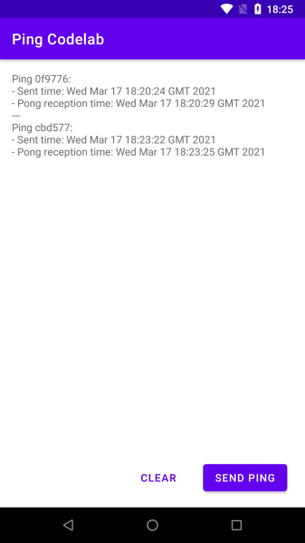
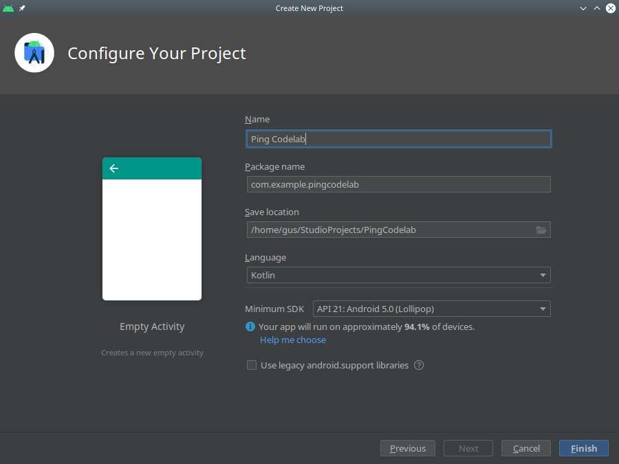
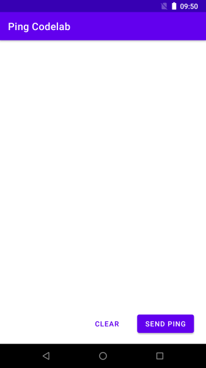
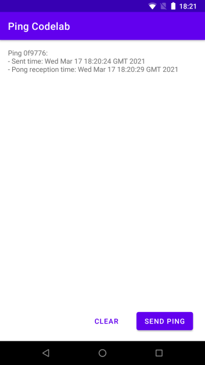

An Awala service is a collection of mobile, desktop, server-side and/or CLI apps that exchange mutually-intelligible messages using endpoints. Server-side apps exposed as Internet hosts will have public endpoints (e.g., your-service.com), whilst all other apps (e.g., mobile, desktop) will have private endpoints.
The service is centralised if there's a public endpoint as the sender or recipient of all messages, or decentralised if all endpoints are private. Alternatively, if there's a public endpoint involved in some but not necessarily all messages, then the service is hybrid.
Anyone can define Awala services, but to keep this codelab simple, we'll just build an Android app for Awala Ping, which is a trivial service used to test Awala itself.
What you'll build
You'll build an Android app that will send ping messages to the public endpoint at ping.awala.services, and it'll also receive pong messages from said public endpoint. Awala Ping is a hybrid service, but we'll use it as a centralised service here. Your app will look like this:

As illustrated in the picture below, when you send a ping from your Android app to ping.awala.services, the message will pass through the private gateway, then on to the public gateway (at frankfurt.relaycorp.cloud, for example), and it'll then arrive at the public endpoint.

On the other hand, ping.awala.services has to respond to your ping by sending a pong message back via the same gateways as illustrated below:

Awala requires messages bound for private endpoints (such as the one inside this Android app) to be pre-authorised by the recipient, so that means your ping message will have to include an authorisation for ping.awala.services to reply with a pong message. In most services, authorisations would be issued once and renewed periodically, but ping.awala.services is stateless, so your app will have to issue an authorisation each time.
You'll be using the Android endpoint library awaladroid to send and receive messages via the private gateway.
What you'll need
- Prior experience building Android apps. If you've never built an Android app, the first app guide will teach you what you need to complete this codelab.
- Android Studio 4.1+.
- An Android phone or tablet running Android 5+.
- The private gateway installed on that Android device.
In case you need help
If you have any issues in the course of this codelab, please post a message on our forum and we'll help you out! You can also check out the final version of the app you're going to build.
Let's create a new project on Android Studio by going to File -> New -> New project.... Once in the wizard, select the empty activity template and click Next.

In the final screen, make sure to leave Kotlin as the programming language and API 21 as the minimum Android SDK.

Define dependencies
Start by adding the following line to gradle.properties:
# Workaround for https://issuetracker.google.com/issues/159151549
android.jetifier.blacklist = bcprov-jdk15on-1.*.jar
Next, open app/build.gradle and add the following repositories after plugins { ... }:
repositories {
maven { url "https://jitpack.io" }
maven { url "https://dl.bintray.com/relaycorp/maven" }
}
Next, add the following line to the compileOptions inside android { ... } so that you can use Java 8 features (e.g., ZonedDateTime):
coreLibraryDesugaringEnabled true
Then add the following inside dependencies { ... }:
// Support modern Java classes (e.g., ZonedDateTime)
coreLibraryDesugaring 'com.android.tools:desugar_jdk_libs:1.1.5'
// Awala
implementation 'com.github.relaycorp:awala-endpoint-android:1.6.5'
// Preferences
implementation 'androidx.preference:preference-ktx:1.1.1'
implementation 'com.github.tfcporciuncula.flow-preferences:flow-preferences:1.3.4'
implementation 'com.squareup.moshi:moshi:1.9.3'
implementation 'com.squareup.moshi:moshi-kotlin:1.9.3'
Now add the following line inside plugins { ... } so that you can use synthetic binding and data binding in this codelab:
id 'kotlin-android-extensions'
id 'kotlin-kapt'
Finally, accept Android Studio's prompt to sync the project.
You're going to use shared preferences to store data for each ping sent and its corresponding pong message (if any), and each record will be serialised with JSON using the Moshi library.
To make it easier to manipulate and query the data in the shared preferences file, create a high-level ping repository class using the code below:
package com.example.pingcodelab
import com.squareup.moshi.Moshi
import com.squareup.moshi.Types
import com.tfcporciuncula.flow.FlowSharedPreferences
import com.tfcporciuncula.flow.Serializer
data class Ping(
val id: String,
val pingDate: Long = System.currentTimeMillis(),
val pongDate: Long? = null
)
class PingRepository(
private val flowSharedPreferences: FlowSharedPreferences,
private val moshi: Moshi
) {
private val repo by lazy {
val serializer = object : Serializer<List<Ping>> {
private val adapter = moshi.adapter<List<Ping>>(
Types.newParameterizedType(
List::class.java,
Ping::class.java
)
)
override fun deserialize(serialized: String) =
adapter.fromJson(serialized) ?: emptyList()
override fun serialize(value: List<Ping>) =
adapter.toJson(value)
}
flowSharedPreferences.getObject(
"pings",
serializer,
emptyList()
)
}
fun observe() = repo.asFlow()
fun get(id: String) =
repo.get().first { it.id == id }
suspend fun set(message: Ping) {
repo.setAndCommit(
repo.get()
.filterNot { it.id == message.id }
+ message
)
}
suspend fun clear() {
repo.setAndCommit(emptyList())
}
}
You're going to create to a custom Application to do two things as soon as the app starts:
- Create a singleton for the ping repository. However, in production you may want to use dependency injection.
- Set up the Awaladroid library before any communication takes place.
To achieve the above, create a file called App.kt in the same directory as MainActivity.kt and add the following to the new file:
package com.example.pingcodelab
import android.app.Application
import com.squareup.moshi.Moshi
import com.squareup.moshi.kotlin.reflect.KotlinJsonAdapterFactory
import com.tfcporciuncula.flow.FlowSharedPreferences
import kotlinx.coroutines.*
import kotlinx.coroutines.channels.Channel
import tech.relaycorp.awaladroid.Awala
@ExperimentalCoroutinesApi
class App : Application() {
val setupDone = Channel<Unit>(0)
private val coroutineContext = Dispatchers.IO + SupervisorJob()
lateinit var pingRepository: PingRepository
override fun onCreate() {
super.onCreate()
pingRepository = PingRepository(
FlowSharedPreferences(getSharedPreferences("ping", MODE_PRIVATE)),
Moshi.Builder().add(KotlinJsonAdapterFactory()).build()
)
CoroutineScope(coroutineContext).launch {
Awala.setup(this@App)
setUpEndpoints()
// Signal that the setup is complete
setupDone.offer(Unit)
collectMessages()
}
}
private suspend fun setUpEndpoints() {
// TODO
}
private fun collectMessages() {
// TODO
}
}
Then add the following attribute to the <application> element of AndroidManifest.xml:
android:name=".App"
Define the user interface
Replace the contents of src/main/res/layout/activity_main.xml with the following:
<?xml version="1.0" encoding="utf-8"?>
<LinearLayout xmlns:android="http://schemas.android.com/apk/res/android"
xmlns:tools="http://schemas.android.com/tools"
android:layout_width="match_parent"
android:layout_height="match_parent"
android:clipChildren="false"
android:clipToPadding="false"
android:orientation="vertical"
android:padding="16dp"
tools:context=".MainActivity">
<androidx.core.widget.NestedScrollView
android:layout_width="match_parent"
android:layout_height="0dp"
android:layout_weight="1">
<TextView
android:id="@+id/pings"
android:layout_width="match_parent"
android:layout_height="wrap_content" />
</androidx.core.widget.NestedScrollView>
<LinearLayout
android:layout_width="match_parent"
android:layout_height="wrap_content"
android:gravity="end"
android:orientation="horizontal">
<com.google.android.material.button.MaterialButton
android:id="@+id/clear"
style="@style/Widget.MaterialComponents.Button.TextButton"
android:layout_width="wrap_content"
android:layout_height="wrap_content"
android:layout_gravity="top|end"
android:layout_marginHorizontal="8dp"
android:backgroundTint="@color/design_default_color_background"
android:text="Clear" />
<com.google.android.material.button.MaterialButton
android:id="@+id/send"
android:layout_width="wrap_content"
android:layout_height="wrap_content"
android:layout_marginHorizontal="8dp"
android:enabled="false"
android:text="Send Ping" />
</LinearLayout>
</LinearLayout>
Implement the activity
Your main activity will be responsible for the following:
- Sending pings when the user taps the "Send ping" button.
- Displaying the sent pings on the screen, along with the reception time of their respective pong messages.
- Emptying the ping repository when the user taps the "Clear" button.
Replace the contents of MainActivity.kt with the following to implement all the above, except for the sending of pings, which you'll do later:
package com.example.pingcodelab
import android.os.Bundle
import androidx.appcompat.app.AppCompatActivity
import androidx.lifecycle.lifecycleScope
import kotlinx.android.synthetic.main.activity_main.*
import kotlinx.coroutines.CoroutineScope
import kotlinx.coroutines.Dispatchers
import kotlinx.coroutines.ExperimentalCoroutinesApi
import kotlinx.coroutines.flow.launchIn
import kotlinx.coroutines.flow.onEach
import kotlinx.coroutines.launch
import tech.relaycorp.awaladroid.GatewayClient
import tech.relaycorp.awaladroid.messaging.OutgoingMessage
import tech.relaycorp.awaladroid.messaging.ParcelId
import java.time.ZonedDateTime
import java.util.*
@ExperimentalCoroutinesApi
class MainActivity : AppCompatActivity() {
private val context by lazy { applicationContext as App }
private val backgroundContext = lifecycleScope.coroutineContext + Dispatchers.IO
private val backgroundScope = CoroutineScope(backgroundContext)
override fun onCreate(savedInstanceState: Bundle?) {
super.onCreate(savedInstanceState)
setContentView(R.layout.activity_main)
lifecycleScope.launch {
// Wait for the app setup to complete if it's still going
context.setupDone.receive()
send.isEnabled = true
}
context.pingRepository
.observe()
.onEach { pings.text = formatPings(it) }
.launchIn(lifecycleScope)
send.setOnClickListener {
backgroundScope.launch {
sendPing()
}
}
clear.setOnClickListener {
backgroundScope.launch {
context.pingRepository.clear()
}
}
}
private fun formatPings(it: List<Ping>) =
it.joinToString("\n---\n") { ping ->
val pingDate = Date(ping.date)
val pongDate = ping.pongDate?.let {
Date(ping.received)
} ?: "Pending"
val shortId = ping.id.takeLast(6)
listOf(
"Ping $shortId:",
"- Sent time: $pingDate",
"- Pong reception time: $pongDate"
).joinToString("\n")
}
private suspend fun sendPing() {
// TODO
}
}
Install the app
Install the app on your Android device to make sure everything is working so far. The app should look like this, although buttons wouldn't be doing anything yet:

Whilst Internet apps communicate with each other using clients and servers, Awala apps use endpoints. Awala makes extensive use of cryptography to ensure the communication between endpoints is private and secure, which requires some upfront work before the actual communication can start.
Fortunately, awaladroid abstracts the low-level details so that you can focus on the important features that will make your app stand out from the rest.
Configure the third-party endpoint
Because you're implementing a centralised service, all the endpoints in the service will be communicating with a specific public endpoint, so you'll need the organisation operating the public endpoint to give you some information about it. In this case, you'll use a public endpoint operated by Relaycorp, whose parameters are:
- Public address:
ping.awala.services. - Identity certificate: Can be downloaded from
https://pong-pohttp.awala.services/certificates/identity.der.
Apps in a centralised service must be shipped with the data above. Identity certificates will expire eventually and the operator should also periodically rotate them, so you should make sure that your app is distributed with a relatively recent version of the public endpoint's identity certificate. You may want to retrieve the latest version of the certificate as part of the release process.
To keep things simple in this codelab, you're just going to manually download the identity certificate once and save it on app/src/main/res/raw/pub_endpoint_identity.der. If you're running Linux or macOS, the following should work from the root of the project:
mkdir app/src/main/res/raw
curl -o app/src/main/res/raw/pub_endpoint_identity.der \
https://pong-pohttp.awala.services/certificates/identity.der
With the certificate on disk, it's now time to register the public endpoint the first time the app starts. You'll also need this endpoint to send pings, so you'll keep a reference to it in the App instance so that the main activity can access it – in production, however, you might want to keep the two separate.
Go back to the App class and declare the following field:
lateinit var recipient: PublicThirdPartyEndpoint
To make sure the field is defined when the app starts, rewrite the setUpEndpoints method as follows:
private suspend fun setUpEndpoints() {
// Load the recipient's endpoint if it exists, or import it first if necessary
val recipientPublicAddress = "ping.awala.services"
recipient = PublicThirdPartyEndpoint.load(recipientPublicAddress)
?: PublicThirdPartyEndpoint.import(
recipientPublicAddress,
resources.openRawResource(R.raw.pub_endpoint_identity).use {
it.readBytes()
}
)
}
Configure your own endpoint
You now need to create a first-party endpoint to be able to communicate with third-party endpoints like the one you just created for ping.awala.services, so let's make that first-party endpoint available when the app starts.
Go back to the App class and declare the following field:
lateinit var sender: FirstPartyEndpoint
Now define the field when the app starts by adding the following to the setUpEndpoints() method:
// Get or create the sender's endpoint
val globalConfig = getSharedPreferences("config", MODE_PRIVATE)
val senderPrivateAddress = globalConfig.getString("sender", null)
sender = if (senderPrivateAddress is String) {
FirstPartyEndpoint.load(senderPrivateAddress)!!
} else {
FirstPartyEndpoint.register().also {
globalConfig.edit {
putString("sender", it.privateAddress)
}
}
}
Note that you're using a shared preferences file to store the private address of the first-party endpoint you created, to avoid creating new endpoints each time the app starts. In a real app, however, you can create as many endpoints as you need – ideally one for each third-party endpoint to keep all communication channels isolated.
You've now completed the groundwork, so it's time to start sending pings!
Pings are JSON-serialised messages that contain a unique identifier and the authorisation for the recipient to reply with a pong message, as illustrated below:
{
"id": "<The ping id>",
"pda": "<The Parcel Delivery Authorisation for the recipient (base64-encoded)>",
"pda_chain": [
"<PDA Chain, Certificate #1 (base64-encoded)>",
"..."
]
}
Using Awala's nomenclature, each ping is a service message – as is each pong. Each message is made of a type (like application/vnd.awala.ping-v1.ping) and its content (like the JSON document above). The content is binary so that you can transmit textual and binary data.
A service message isn't transmitted as is: Instead, it's encrypted and put inside a parcel, which contains just enough information for gateways to route it and ensure that only pre-authorised messages are delivered.
Fortunately, awaladroid takes care of the cryptography and (un)sealing parcels, so that you can focus on the important things.
Serialise ping messages
Let's define the JSON serialisation routine first. Create a new file called PingSerialization.kt in the same package as the main activity, and add the following to it:
package com.example.pingcodelab
import android.util.Base64
import org.json.JSONArray
import org.json.JSONObject
internal fun serializePingMessage(
pingId: String,
pda: ByteArray,
pdaChain: List<ByteArray>
): ByteArray {
val pingJSON = JSONObject()
pingJSON.put("id", pingId)
pingJSON.put("pda", base64Encode(pda))
pingJSON.put("pda_chain", JSONArray(pdaChain.map { base64Encode(it) }))
val pingJSONString = pingJSON.toString()
return pingJSONString.toByteArray()
}
private fun base64Encode(input: ByteArray): String =
Base64.encodeToString(input, Base64.DEFAULT)
Send service message
The private gateway runs as a bound service and you're responsible for binding to it whenever you need to send messages. Generally speaking, binding must take place at some point after calling Awala.setup() (currently done in your App class) and before communication starts.
It's up to you whether to stay bound indefinitely or only bind when necessary, but in this codelab you're going to defer the binding until the first message is sent.
Go back to the MainActivity class and rewrite the sendPing() method as follows:
private suspend fun sendPing() {
// Bind to the gateway if not already bound
GatewayClient.bind()
val pingId = UUID.randomUUID().toString()
val authorization = context.sender.issueAuthorization(
context.recipient,
ZonedDateTime.now().plusDays(3)
)
val pingMessageSerialized = serializePingMessage(
pingId,
authorization.pdaSerialized,
authorization.pdaChainSerialized
)
val outgoingMessage = OutgoingMessage.build(
"application/vnd.relaynet.ping-v1.ping",
pingMessageSerialized,
context.sender,
context.recipient
)
GatewayClient.sendMessage(outgoingMessage)
val pingMessage = Ping(pingId)
context.pingRepository.set(pingMessage)
}
GatewayClient.bind() is idempotent, so nothing bad would happen if the app is already bound to the gateway.
Unbind from the gateway
To unbind from the gateway when the app is no longer on the foreground, go back to the MainActivity class and override the onDestroy() method as follows:
override fun onDestroy() {
super.onDestroy()
// Unbind from the gateway if still bound
GatewayClient.unbind()
}
Note that GatewayClient.unbind() is idempotent too.
Test it!
Install the app and start sending pings. It should look like this:
You should be getting pongs at this point – They're just not displayed on the screen just yet.
You're now going to update the data in the ping repository to set the time when the app received each pong message. The MainActivity is programmed to update the screen whenever the repository changes, so those changes should be reflected on the screen almost instantly.
Deserialise pong messages
The content of the pong message is just the respective ping id – no JSON this time. So go back to the PingSerialization.kt file and add the following:
internal fun extractPingIdFromPongMessage(pongMessageSerialized: ByteArray): String {
return pongMessageSerialized.toString(Charset.defaultCharset())
}
Collect service messages
When the private gateway receives a message bound for one of the endpoints inside your app, it will notify your app by binding to it – Android will then wake up your app in the background unless it's already running in the foreground.
Before awaladroid can actually collect messages, you have to define how those messages should be processed. In this codelab you're going to do that as soon as the app starts, so that you can process pong messages even when your app isn't in use.
Go to the App class and override the collectMessages() method as follows:
private suspend fun collectMessages() {
GatewayClient.receiveMessages().collect {
val pingId = extractPingIdFromPongMessage(it.content)
val pingMessage = pingRepository.get(pingId)
if (pingMessage != null) {
pingRepository.set(pingMessage.copy(pongDate = System.currentTimeMillis()))
}
it.ack()
}
}
Note that you're having to call the ack() method on the incoming message as soon as you finish processing it to instruct the gateway to delete its copy of the parcel. The gateway will continue to send you that message until you acknowledge it. If the processing is expensive and/or you may get many messages, you may want to add incoming messages to a background queue and acknowledge immediately.
The incoming message exposes the type of the message (e.g., application/vnd.awala.ping-v1.pong), as well as the third-party sender and the first-party recipient endpoints.
You'll notice that you're not binding to the gateway: That's because awaladroid will do it on demand when new incoming messages are available.
Test it again!
Reinstall the app and try to send pings again. If everything works as expected, you should now see the time when the respective pong messages were received:

Well done! You've just built an Android app for a centralised Awala service.
What's next?
- Learn more about the architecture of Awala services.
- Read the API documentation for awaladroid.
- Join the Awala community and give us some feedback on the codelab.
- Spread the word on Twitter!
- Make your Android app communicate with your own public endpoint by doing the Node.js public endpoint codelab.